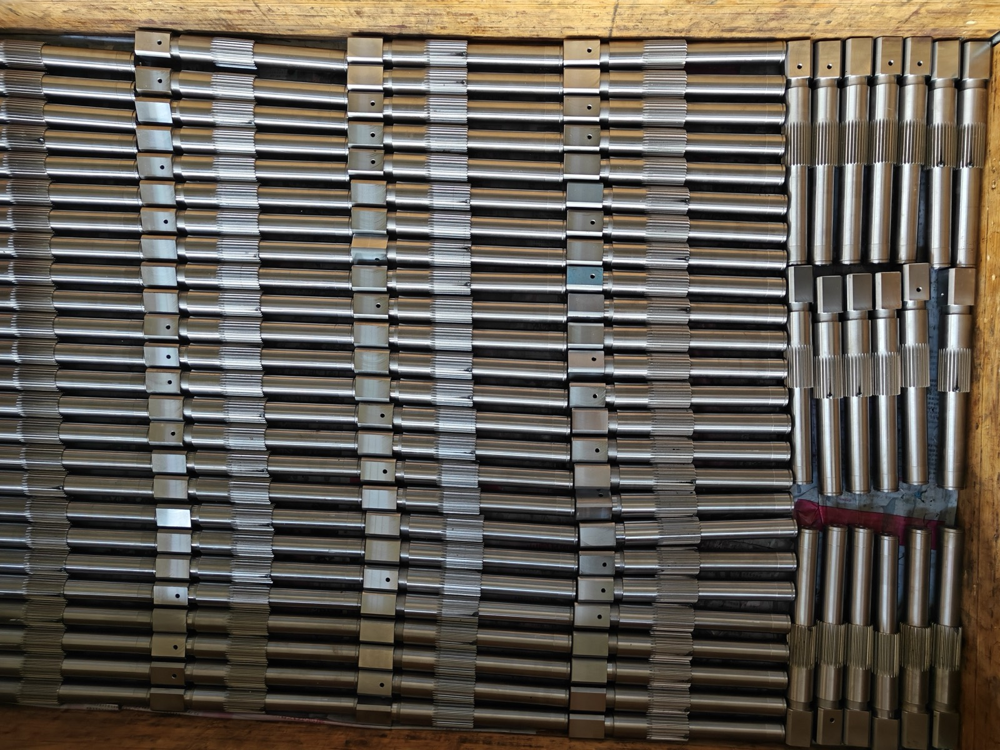
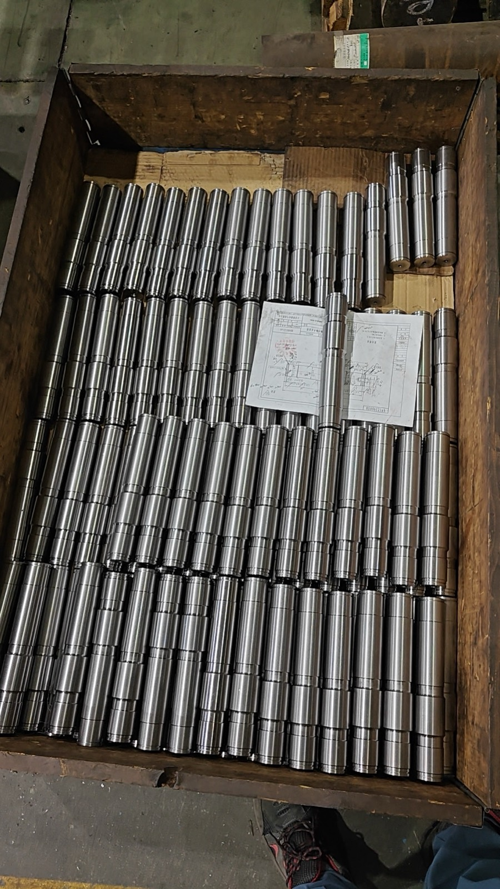
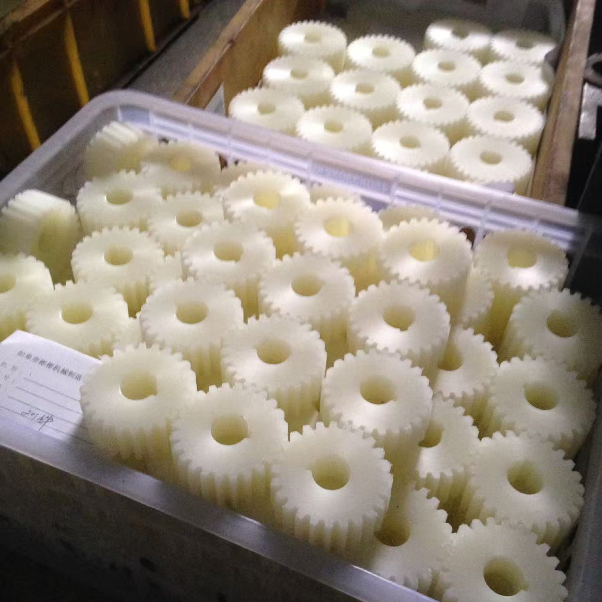
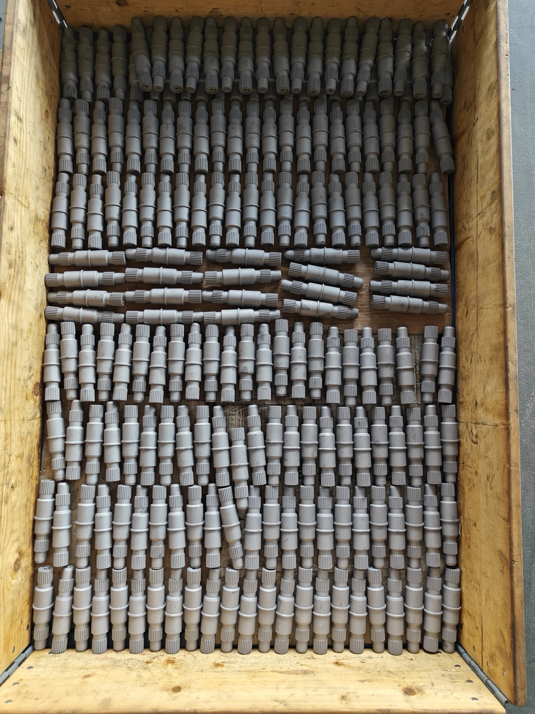
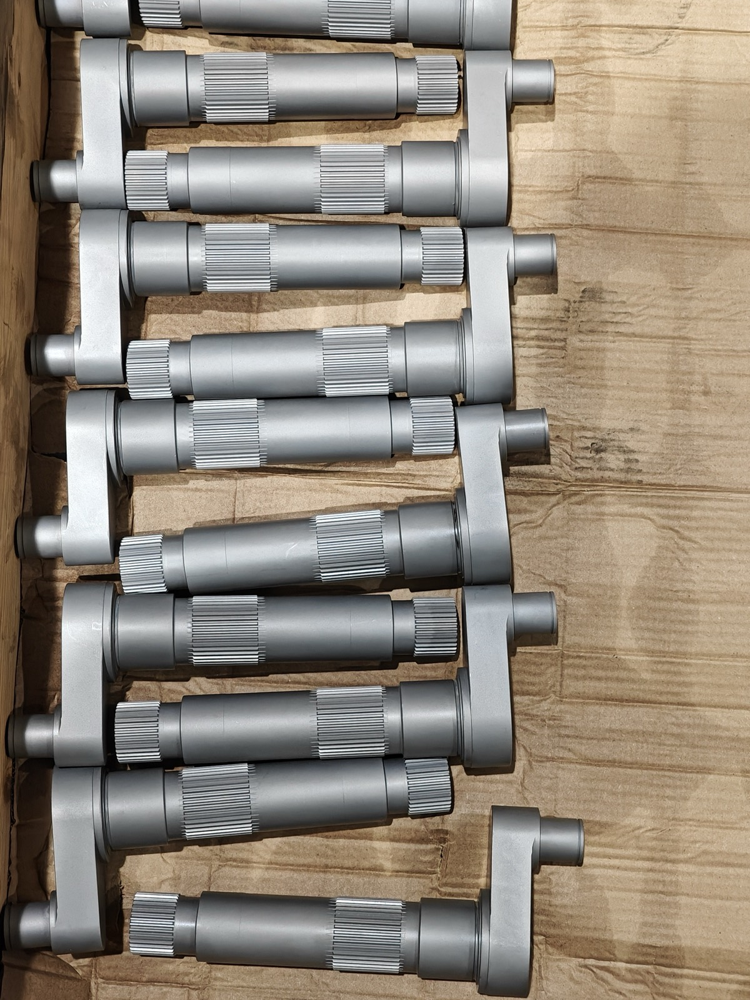
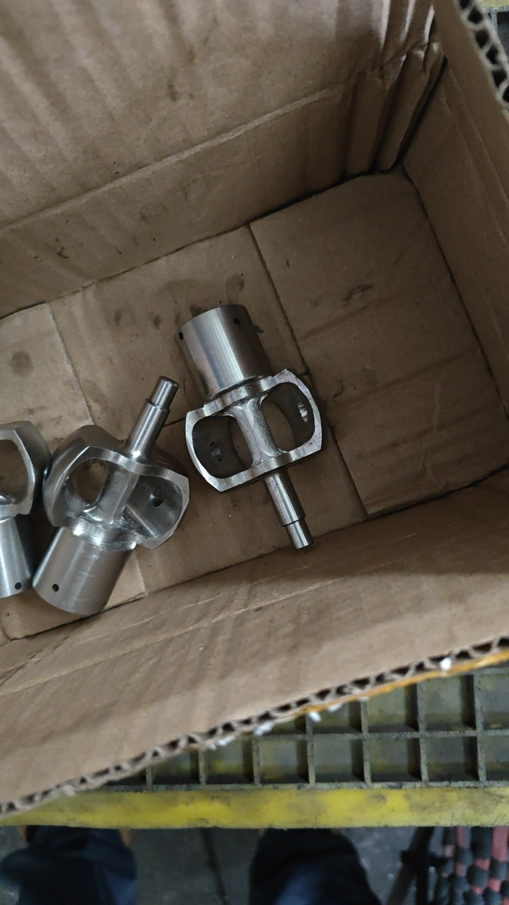
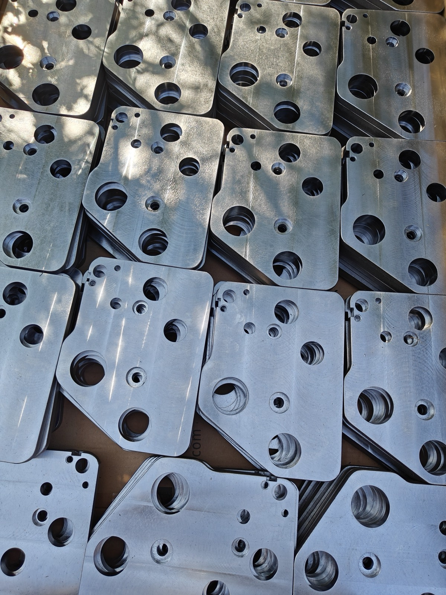
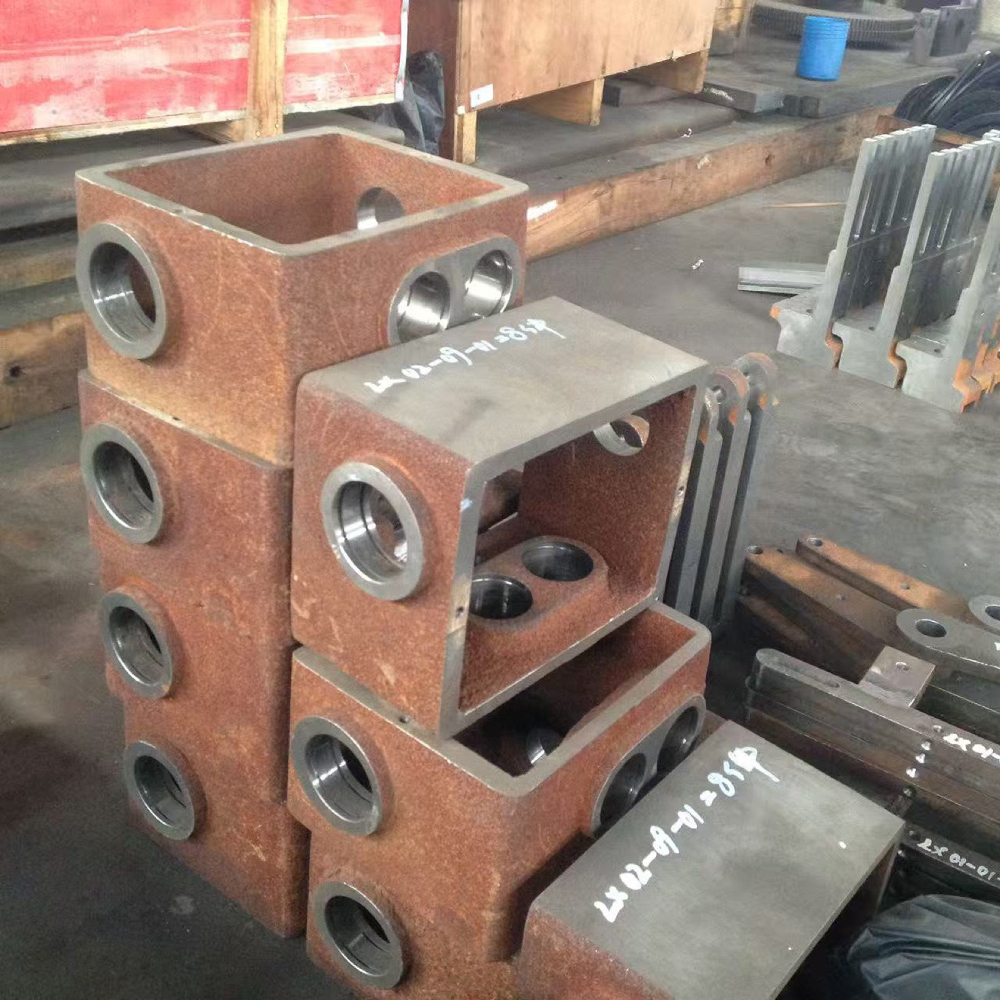
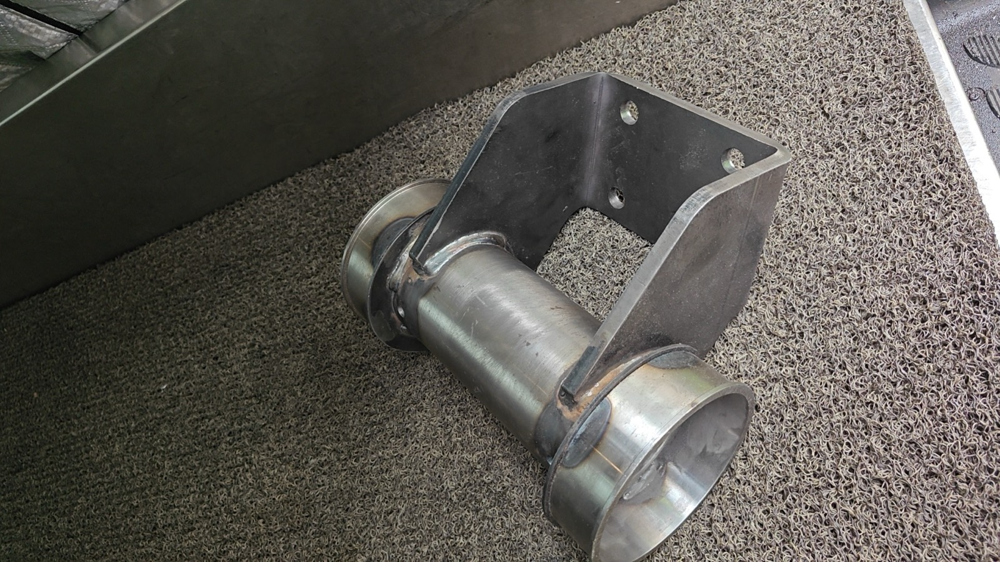

Products
We produce a wide range of machined components as a supporting manufacturer for printing, packaging, and mining machinery. Below is a selection of real production photos, by category.
Note: product names are provisional — exact part names and applications are being confirmed with the production team. TBD
Shafts & Gears









Machined Components





Welded Parts & Assemblies



Need custom parts made from your drawings or samples? Contact us. (Accepted drawing formats: TBD)